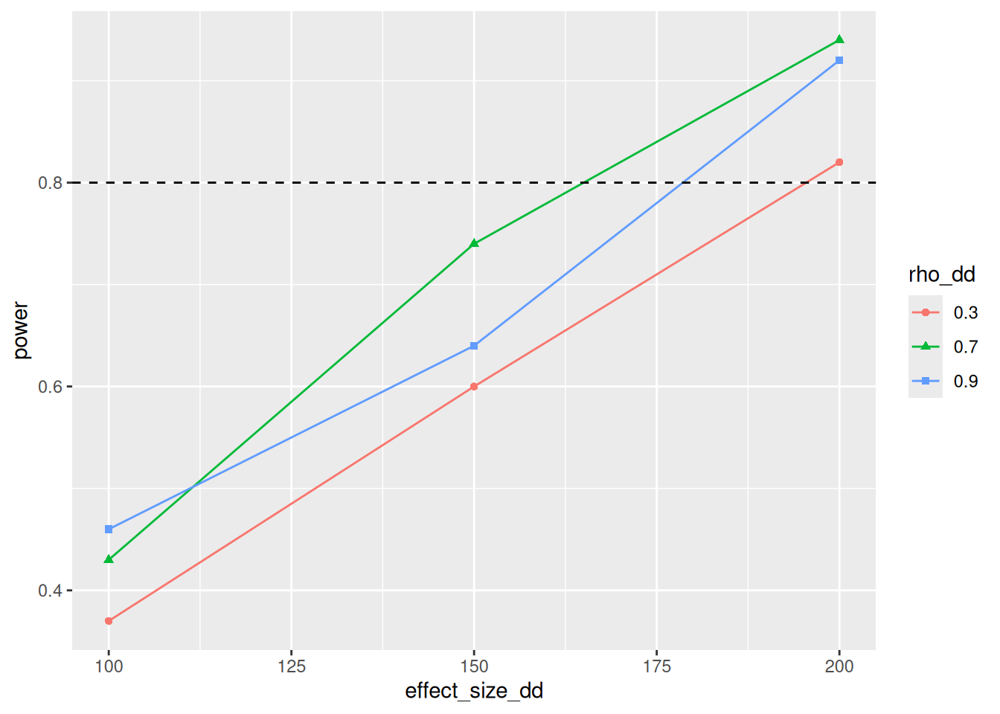

Power Analysis using DeclareDesign
DeclareDesign is a system to simulate Research Designs. This is useful for power analysis, because it is often hard to include things like clustering and covariates in standard power calculators.
Resources for learning about DeclareDesign:
- Slides by the authors of DeclareDesign: Graeme Blair, Alex Coppock, Macartan Humphreys
- The DeclareDesign CheatSheet
- The book Research Design in the Social Sciences: Declaration, Diagnosis, and Redesign
Read at least the slides before going forward!
Diff-in-Diff
Here’s a common situation: I’ve collected some baseline data, and are wondering if our study has sufficient power to pick up expected treatment effects.
I will start off with some fake baseline data, which only contains y0, our outcome
indicator. We use the fabricate() function, from the fabricatr library, which is
loaded with DeclareDesign:
# start with a clean environment
rm(list=ls())
# load packages
library(tidyverse) # data management
library(fixest) # for estimation of fixed effects
library(lmtest) # for computing standard errors
library(sandwich) # provides the functions for lmtest to compute robust SEs
library(DeclareDesign) # for power calculation
library(broom) # to extract coefficients from model output
# set seed for reproducibility
set.seed(1)
N = 100
fake_data <-
fabricate(N = N,
y0 = runif(N, 100, 150))
fake_data %>% as_tibble()## # A tibble: 100 × 2
## ID y0
## <chr> <dbl>
## 1 001 113.
## 2 002 119.
## 3 003 129.
## 4 004 145.
## 5 005 110.
## 6 006 145.
## 7 007 147.
## 8 008 133.
## 9 009 131.
## 10 010 103.
## # ℹ 90 more rowsNow, let’s add an extra year to our data, again using fabricate(), just
to demonstrate how, using add_level() and then crosslevels():
fakedata_years <-
fabricate(fake_data,
years = add_level(N = 2,
t = as.numeric(years) - 1,
nest=FALSE),
observations = cross_levels(by = join_using(ID, years)))
fakedata_years %>% as_tibble()## # A tibble: 200 × 5
## ID y0 years t observations
## <chr> <dbl> <chr> <dbl> <chr>
## 1 001 113. 1 0 001
## 2 002 119. 1 0 002
## 3 003 129. 1 0 003
## 4 004 145. 1 0 004
## 5 005 110. 1 0 005
## 6 006 145. 1 0 006
## 7 007 147. 1 0 007
## 8 008 133. 1 0 008
## 9 009 131. 1 0 009
## 10 010 103. 1 0 010
## # ℹ 190 more rowsNow it’s time to start declaring our design. The first element of the
design is the model, which essentially is my data, and I declare it
using the same synytax as fabricate()
above. This means you can input existing data, but also generate
random new variables.
The potential outcomes are generated using potential_outcomes().
This will create two variables Y_Z_1 and Y_Z_0, which are
the potential outcomes if having received treatment (Z == 1) or not.
Note that I will generate Z in the next step.
You can see I have created a very simple data generating
process to generate different outcomes in t = 1 for treatment
and control, but you can go absolutely wild here to check the
assumptions you have: you can cluster the outcomes, include
compliance or treatment effectiveness, add more or less noise,
make it depend on both observable and unobservable
characteristics, etc. etc.
year_shock <- 10
effect_size <- 15
stdev <- 5
model <-
declare_model(fakedata_years,
potential_outcomes(Y ~ y0 + t * year_shock +
Z * effect_size +
t * rnorm(N,sd = stdev)))Then it’s time to think about assignment. I need to assign treatment,
and reveal the outcomes based on treatment assignment. Here I create
two variables for treatment so I can toy around with different model
specifications later on. The first variable is the treatment_group, to
indicate which households get the treatment. For this I use the
cluster_ra() because I have two observations per household,
so households can be thought of as a cluster. The other is Z,
an indicator for actually having
received the treatment (equivalent to Z = treatment_group * t).
If treatment had already been known during baseline (not unlikely) then we would have only had to reveal the outcomes:
assignment <-
declare_assignment(treatment_group = cluster_ra(clusters = ID, prob = 0.5),
Z = ifelse(treatment_group == 1 & t == 1,1,0),
Y = reveal_outcomes(Y ~ Z)) Next, I declare my theoretical quantity of interest is the treatment effect in year 1. This is useful to check for bias. This is not really needed here, since my model will follow our data generation process exactly, so I could have just skipped this step.
And finally, I add three estimators. If I hadn’t declared an inquiry,
I could have declared a test here using declare_test(), which has
the same syntax.
The first estimator uses lm_robust(), which is included
with DeclareDesign, to estimate a simple linear model using standard
DiD notation.
estimator1 <-
declare_estimator(Y ~ t * treatment_group,
inquiry = "ATE",
.method = estimatr::lm_robust,
term = "t:treatment_group",
label = "LM")Then I use feols()
from the fixest
package to estimate a Two-way fixed effects (2FE) model.
This is equivalent to the model above for this case, but the
2FE can be more easily extended to more complex
designs (but beware!).
library(fixest)
library(broom)
estimator2 <-
declare_estimator(Y ~ Z | treatment_group + t,
vcov = "hetero",
.method = feols,
term = "Z",
inquiry = "ATE",
label = "2FE")As third estimator, I use a custom estimation function. The function
takes an equation, the data to be analyzed, and (optionally)
the type of standard errors to compute, and as its output
it returns a tidy dataset containing estimated coefficients
created by broom::tidy().
As long as you make sure the data can go into your custom function
(using an argument called data),
and it returns something that looks like what
broom::tidy() would
return, there’s no limit as to how complex you can make your analysis.
Here, I keep it (relatively) simple. I use the lmtest/sandwich way of estimating robust standard errors, and make sure you can easily change the equation and type of Standard Errors to use through a parameter.
library(lmtest)
library(sandwich)
custom_robust <- function(equation, data, type="HC1"){
# function takes a formula, provided as the first argument
# of declare_estimator...
# .. a type of standard errors to pass to vcov (default is HC1)
# ... and data
# It outputs a tidy data frame with relevant coefficients.
lm(equation, data = data) %>%
coeftest(., vcov = vcovHC(., type=type)) %>%
broom::tidy(conf.int=TRUE) %>%
mutate(outcome = "Y") %>%
filter(term == "t:treatment_group")
}
# the arguments formula and type are passed to to custom_robust()
# as is the data on which to run the estimator.
estimator3 <-
declare_estimator(equation = Y ~ t * treatment_group,
handler = label_estimator(custom_robust),
inquiry = "ATE",
label = "Custom") Finally, I combine all these elements to declare my design. Note that it’s only here that R starts actually running the code to randomize things. The previous was just declaration!
##
## Research design declaration summary
##
## Step 1 (model): declare_model(fakedata_years, potential_outcomes(Y ~ y0 + t * year_shock + Z * effect_size + t * rnorm(N, sd = stdev)))
##
## N = 200
##
## Added variable: ID
## N_missing N_unique class
## 0 100 character
##
## Added variable: y0
## min median mean max sd N_missing N_unique
## 100.67 124.39 125.89 149.6 13.35 0 100
##
## Added variable: years
## 1 2
## 100 100
## 0.50 0.50
##
## Added variable: t
## 0 1
## 100 100
## 0.50 0.50
##
## Added variable: observations
## N_missing N_unique class
## 0 200 character
##
## Added variable: Y_Z_0
## min median mean max sd N_missing N_unique
## 100.67 132.43 130.95 160.63 14.16 0 200
##
## Added variable: Y_Z_1
## min median mean max sd N_missing N_unique
## 115.67 146.79 145.69 176.27 14.24 0 200
##
## Step 2 (assignment): declare_assignment(treatment_group = cluster_ra(clusters = ID, prob = 0.5), Z = ifelse(treatment_group == 1 & t == 1, 1, 0), Y = reveal_outcomes(Y ~ Z))
##
## Added variable: treatment_group
## 0 1
## 100 100
## 0.50 0.50
##
## Added variable: Z
## 0 1
## 150 50
## 0.75 0.25
##
## Added variable: Y
## min median mean max sd N_missing N_unique
## 100.67 134.88 134.68 176.27 17.03 0 200
##
## Step 3 (inquiry): declare_inquiry(ATE = mean(Y_Z_1 - Y_Z_0), subset = (t == 1))
##
## A single draw of the inquiry:
## inquiry estimand
## ATE 14.47179
##
## Step 4 (estimator): declare_estimator(Y ~ t * treatment_group, inquiry = "ATE", .method = estimatr::lm_robust, term = "t:treatment_group", label = "LM")
##
## Formula: Y ~ t * treatment_group
##
## Method: :: Method: estimatr Method: lm_robust
##
## A single draw of the estimator:
## term estimator estimate std.error statistic p.value conf.low
## t:treatment_group LM 15.68729 3.867435 4.056252 7.194547e-05 8.060161
## conf.high df outcome inquiry
## 23.31442 196 Y ATE
##
## Step 5 (estimator): declare_estimator(Y ~ Z | treatment_group + t, vcov = "hetero", .method = feols, term = "Z", inquiry = "ATE", label = "2FE")
##
## Formula: Y ~ Z | treatment_group + t
##
## Method: feols
##
## A single draw of the estimator:
## term estimator estimate std.error statistic p.value conf.low conf.high
## Z 2FE 15.68729 3.867435 4.056252 7.194547e-05 8.060161 23.31442
## inquiry
## ATE
##
## Step 6 (estimator): declare_estimator(equation = Y ~ t * treatment_group, inquiry = "ATE", handler = label_estimator(custom_robust), label = "Custom")
##
## Formula: Y ~ t * treatment_group
##
## A single draw of the estimator:
## estimator term estimate std.error statistic p.value conf.low
## Custom t:treatment_group 15.68729 3.867435 4.056252 7.194547e-05 8.060161
## conf.high outcome inquiry
## 23.31442 Y ATENote that the results of my three estimators are identical, which is as expected.
If you want to browse a version of the data created by your design,
use the draw_data() function. This is useful to examine the properties of the data.
## # A tibble: 200 × 10
## ID y0 years t observations Y_Z_0 Y_Z_1 treatment_group Z Y
## <chr> <dbl> <chr> <dbl> <chr> <dbl> <dbl> <int> <dbl> <dbl>
## 1 001 113. 1 0 001 113. 128. 1 0 113.
## 2 002 119. 1 0 002 119. 134. 1 0 119.
## 3 003 129. 1 0 003 129. 144. 0 0 129.
## 4 004 145. 1 0 004 145. 160. 0 0 145.
## 5 005 110. 1 0 005 110. 125. 0 0 110.
## 6 006 145. 1 0 006 145. 160. 1 0 145.
## 7 007 147. 1 0 007 147. 162. 1 0 147.
## 8 008 133. 1 0 008 133. 148. 0 0 133.
## 9 009 131. 1 0 009 131. 146. 1 0 131.
## 10 010 103. 1 0 010 103. 118. 0 0 103.
## # ℹ 190 more rowsNow to calculate our power. The diagnose_design() will run our
model 500 times and our power is simply the fraction of times we
find a statistically significant effect.
##
## Research design diagnosis based on 500 simulations. Diagnosis completed in 14 secs. Diagnosand estimates with bootstrapped standard errors in parentheses (100 replicates).
##
## Design Inquiry Estimator Outcome Term N Sims Mean Estimand
## design ATE 2FE <NA> Z 500 14.97
## (0.03)
## design ATE Custom Y t:treatment_group 500 14.97
## (0.03)
## design ATE LM Y t:treatment_group 500 14.97
## (0.03)
## Mean Estimate Bias SD Estimate RMSE Power Coverage
## 15.02 0.05 1.04 0.70 1.00 1.00
## (0.05) (0.04) (0.03) (0.02) (0.00) (0.00)
## 15.02 0.05 1.04 0.70 1.00 1.00
## (0.05) (0.04) (0.03) (0.02) (0.00) (0.00)
## 15.02 0.05 1.04 0.70 1.00 1.00
## (0.05) (0.04) (0.03) (0.02) (0.00) (0.00)Looks good! (Except for some NAs for the 2FE model: this is due to the summary function not providing all things needed. To fix this, I could have created my own summary or handler function, but it doesn’t really affect anything, so this is good enough.)
But what if I was too optimistic? Using the
redesign() function, you can vary various
parameters of your design, and test all their combinations.
Here I check a few plausible values for
the stdev variable (giving the variation of the error term for
incomes in year 1) and the expected effect size.
Note that by default, this runs all estimators, 500 times for each
combination of the parameters. This takes a lot of time, so I update
my design to have only one estimator (estimator1, which is fast)
and I’ve set the sims option of diagnose_design() to 200.
design <- model + assignment + inquiry + estimator1
diagnosis <-
design %>%
redesign(effect_size = 6:12,
stdev = c(3,5,7)) %>%
diagnose_design(sims = 200)Now, I want a nice plot. For this I use the
tidy() function to convert the output to a data frame, which -
after some filtering - I pipe into ggplot().
It’s now easy to see that I should
be able to pick up an effect size of 10 in most cases.
diagnosis %>%
tidy() %>%
filter(diagnosand == "power") %>%
select(effect_size,stdev,power = estimate) %>%
mutate(stdev = factor(stdev)) %>%
ggplot(aes(x = effect_size, y = power,
shape = stdev, color=stdev)) +
geom_line() +
geom_point() +
geom_hline(yintercept=0.8,linetype=2) +
scale_x_continuous(breaks=seq(6,12,2))